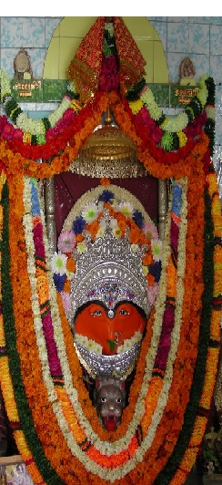

Your Tour Guide
Raani Ki Vaav
 Patan Devi, also called Maa Patneshwari, is the oldest and one of the most sacred temples of Patan. The ancient temple, originally called Maa Nagar Devi Patneshwari, is believed to be the abode of the goddess Mahaa Kaali.
As in many other places, a mela is also held near these temples at the time of Vijayadashmi. On Saptami, Ashtami and Navami (Durga Puja)during the mela about 600 people come to offer prayers daily at either of the two temples. Visitors generally bring sweets, garlands and fruits to offer to the deities. The priest of the temple takes some quantity of the prasad and returns the rest to the devotees. He marks their forehead with Rori (red powder). The devotees also give some money to the priest as "dakshina". As regards the routine of the rituals, the deity is daily bathed morning and evening and this is followed by offerings of prasad (fruits and sweetmeats etc.) and aarti with the usual reciting of hymns by the priest, accompanied by the ringing of bells